Statistik und zufällige Messunsicherheit#
Das Ergebnis eines Experimentes wird nicht ausschließlich durch die experimentellen Vorschriften oder den Messaufbau bestimmt, sondern auch durch zufällige Einflüsse.
Das heißt alle unsere Experimente sind Zufallsexperimente.
Das Ergebnis eines Zufallsexperiments (oder unserer Messung) ist daher nicht deterministisch, sondern eine Zufallsgröße (oder Zufallsvariable). Diese kann bei identischen Versuchsbedingungen unterschiedliche Werte annehmen, da sie vom Zufall abhängt.
Je nach Anzahl der beteiligten Größen unterscheidet man:
Eindimensionale (univariate) Zufallsvariable: Das Ergebnis hängt nur von einer Größe ab, z. B. die gemessene Temperatur ( T ) oder Spannung ( U ).
Zweidimensionale (bivariate) Zufallsvariablen: Das Ergebnis hängt von zwei Größen ab, z. B. Temperatur und Druck, deren gemeinsames Verhalten untersucht wird.
Mehrdimensionale (multivariate) Zufallsvariablen: Das Ergebnis wird von mehreren Größen gleichzeitig beeinflusst, etwa in komplexen Messsystemen mit vielen Einflussparametern.
Zufällige Einflüsse führen dazu, dass Messergebnisse streuen. Diese Streuung kann durch statistische Methoden beschrieben werden.
Das GUM (Guide to the Expression of Uncertainty in Measurement) verwendet dazu unterschiedliche Wahrscheinlichkeitsdichtefunktionen und Verteilungen, um Messunsicherheiten zu modellieren und zu quantifizieren.
Beispiele für häufig verwendete Verteilungen:
Normalverteilung (Gauß-Verteilung): Typisch für viele zufällige Messabweichungen.
t-Verteilung (Student-Verteilung): Für kleine Stichprobenumfänge.
Rechteckverteilung (Gleichverteilung): Für gleich wahrscheinliche Werte in einem Intervall, häufig bei Typ-B-Unsicherheiten.
Dreiecksverteilung oder trapezförmige Verteilung: Für abgeschätzte, aber nicht exakt bekannte Unsicherheiten.
Die Wahl der Verteilung hängt vom physikalischen Prozess und den verfügbaren Informationen über die Messgröße ab.
Ziel ist es, die Streuung der Messwerte mathematisch zu beschreiben, um daraus statistische Unsicherheiten (Typ A) abzuleiten und die Wahrscheinlichkeit anzugeben, mit der ein Messergebnis innerhalb eines bestimmten Intervalls um den wahren Wert liegt, inkl. der systematischen Unsicherheiten (Typ B).
Messreihe als Zufallsexperiment#
Statistische, oder zufällige, Einflüsse auf einen Messwert lassen sich leider nicht korrigieren, dennoch können durch wiederholte Messungen der eigentliche Messwert bestimmt werden und die Messunsicherheit sogar reduziert werden, da diese mit der Wurzel der Wiederholungen abnimmt. Wiederholte Messungen sind auch als Messreihe oder Stichprobe bekannt. Hierbei wird eine Anzahl von \(m\) Messungen für ein und denselben Messwert durchgeführt. Die einzelnen Messwerte \(x_j = [x_1, x_2, ... x_m]\) unterscheiden sich voneinander.
Bei genügend vielen Wiederholungen der Messung kann in vielen Fällen beobachtet werden, dass sich die Messwerte \(x_j\) um einen zentralen Wert, den wir mit \(\overline x\) bezeichnen, scharen. Die Häufigkeit, einen Messwert in einem bestimmten Abstand zu diesem zentralen Wert zu finden, \(|x_j - \overline x|\), ist umso kleiner, je größer der Abstand ist. Man spricht hierbei von einer Häufigkeitsverteilung der \(x_j\). Die grafische Darstellung einer solchen Messreihe erfolgt in einem Histogramm.
In nachfolgendem Code-Block wird für die Messreihe
ein Histogramm erstellt.
Die absolute Häufigkeit der einzelnen Werte in einer bestimmten Klasse werden dadurch grafisch dargestellt. Dafür werden sogenannten Klassen erstellt, inwelche die einzelnen Messwerte eingruppiert werden. Diese Klassen müssen nicht zwangsläufig alle die gleiche Breite haben.
Show code cell source
# Import necessary libraries
import numpy as np
import pandas as pd
import matplotlib.pyplot as plt
import warnings
# Matplotlib settings
plt.style.use('default')
plt.rcParams['font.size'] = 10
plt.figure(figsize=(5,4)) # Plot-Größe
# Sample data
t_sec = pd.DataFrame([1.41, 1.35, 1.45, 1.43, 1.44, 1.43,
1.41, 1.32, 1.43, 1.40, 1.49, 1.40,
1.40, 1.42, 1.40, 1.38, 1.37, 1.36,
1.37, 1.32, 1.47, 1.40])
klasse = np.linspace(1.3, 1.5, 6)
# Calculate the histogram using np.histogram
#hist_values, bin_edges = np.histogram(t_sec, bins=klasse)
bconts, bedges, _p= plt.hist(t_sec, bins=klasse, edgecolor='black', alpha=0.5)
plt.ylabel('Absolute Häufigkeit')
plt.xlabel('Messwerte $x_j$ in Klassen eingeteilt')
plt.show()
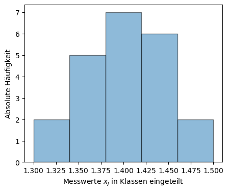
Im Diagramm ist die absolute Häufigkeit der Messreihe dargestellt. In der ersten Klasse ganz links befinden sich die Messwerte mit Zahlenwerten zwischen 1,3-1,34. Ausreißer, also Messwerte die viel zu weit von den anderen Messwerten entfernt liegen, können mithilfe von Histogrammen leicht identifiziert und bei Bedarf entfernt werden.
Show code cell source
# Print histogram data as a table
from tabulate import tabulate
# Create a DataFrame from the histogram data
hist_df = pd.DataFrame({'Klasse': bedges[:-1], 'Absolute Häufigkeit': bconts})
print(tabulate(hist_df, headers='keys', tablefmt='pretty'))
+---+--------------------+---------------------+
| | Klasse | Absolute Häufigkeit |
+---+--------------------+---------------------+
| 0 | 1.3 | 2.0 |
| 1 | 1.34 | 5.0 |
| 2 | 1.3800000000000001 | 7.0 |
| 3 | 1.42 | 6.0 |
| 4 | 1.46 | 2.0 |
+---+--------------------+---------------------+
Empirische Kennzahlen einer Stichprobe#
Anhand der Histogrammdarstellung kann man bereits erkennen, dass der richtige Wert unseres Experiments vermutlich im Bereich zwischen 1,38 und 1,41 liegt – dort treten die meisten Messungen auf.
Man möchte nun eine Kennzahl finden, die den richtigen (bzw. wahren) Wert möglichst gut beschreibt.
Eine solche Kennzahl ist der Stichprobenmittelwert (oder empirische Mittelwert).
Er entspricht demjenigen Wert, um den sich die Messwerte im Mittel am wenigsten quadratisch unterscheiden.
Gesucht ist also ein Wert \(\overline{x}\), der die Summe der quadratischen Abweichungen der einzelnen Messwerte \(x_j\) minimiert:
Damit \(S(\overline{x})\) minimal wird, setzt man die erste Ableitung nach \(\overline{x}\) gleich null:
Daraus folgt unmittelbar:
Der Wert \(\overline{x}\), bei dem die Quadratsumme minimal wird, ist also gerade der arithmetische Mittelwert:
Damit ist gezeigt, dass der Mittelwert diejenige Schätzgröße ist, die den wahren Wert einer Messgröße am besten beschreibt.
Ein Maß für die Abweichung der Einzelmessungen von dieser besten Schätzgröße, dem Mittelwert, sind wiederum die quadratischen Abweichungen und werden als empirische Varianz \(s^2(x)\) bezeichnet, ein Maß für die Streuung der Messwerte:
Der Faktor \(\tfrac{1}{m-1}\) korrigiert die Schätzung, um die begrenzte Stichprobengröße zu berücksichtigen – man spricht von der Bessel-Korrektur. Ist \(m\) sehr groß, also wurden sehr viele Messwerte aufgezeichnet, so ist die 1 in der Korrektur von \(m-1\) vernachlässigbar und es gilt \(m-1 \rightarrow m\) und nähert sich damit der theoretischen Varianz \(\sigma^2\) der Normalverteilung an.
Die empirische Standardabweichung \(s(x)\) ist die Wurzel aus der Varianz:
Sie beschreibt, wie stark die einzelnen Messergebnisse im Durchschnitt vom Mittelwert abweichen.
Eine kleine Standardabweichung weist auf eine hohe Präzision der Messreihe hin, während eine große Standardabweichung auf eine starke Streuung der Werte deutet.
Summe der quadratischen Abweichungen
Das Prinzip, den Mittelwert als den Wert zu bestimmen, der die Summe der quadratischen Abweichungen minimiert, kennen wir bereits aus der Regressionsanalyse und der Kurvenanpassung.
Auch dort sucht man nach einer Funktion — etwa einer Geraden oder Polynomfunktion —, die die gegebenen Messpunkte im Sinne der kleinsten Quadrate möglichst gut beschreibt.
Das zugrunde liegende Kriterium der kleinsten Quadrate lautet, die Summe der quadratischen Abweichungen zwischen Messwerten \(y_j\) und den durch das Modell vorhergesagten Werten \(\hat{y}_j\) zu minimieren. Die Residuen, bzw. die Summe der quadrierten Resiuen, haben uns auch in diesem Falle die Abweichung der Regression geliefert.
Show code cell source
# Matplotlib settings
plt.style.use('default')
plt.rcParams['font.size'] = 10
plt.figure(figsize=(5,4)) # Plot-Größe
# Zugriff auf Spalte als 1D-Array
x = t_sec.squeeze() # Wandelt 1-Spalten-DataFrame in Series um
# Histogramm (absolute Häufigkeit)
bconts, bedges, _ = plt.hist(x, bins=klasse, edgecolor='black', alpha=0.5)
# Mittelwert und Standardabweichung
mean = x.mean()
std = x.std(ddof=1)
# Linien für Mittelwert und ±1σ (mit Werten in der Legende)
plt.axvline(mean, color='tab:blue', linestyle='-', linewidth=2,
label=fr'$\overline{{x}} = {mean:.3f}$')
plt.axvline(mean - std, color='tab:red', linestyle='--', linewidth=1.5,
label=fr'$\overline{{x}} - s = {mean - std:.3f}$')
plt.axvline(mean + std, color='tab:red', linestyle=':', linewidth=1.5,
label=fr'$\overline{{x}} + s = {mean + std:.3f}$')
# Achsenbeschriftung
plt.ylabel('Absolute Häufigkeit')
plt.xlabel('Messwerte $x_j$ (in Klassen eingeteilt)')
# Legende und Darstellung
plt.legend()
plt.tight_layout()
plt.show()
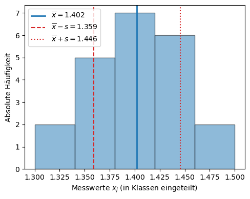
Häufigkeitsdichte#
Im Fall diskreter Klassen, wie im Histogramm oben dargestellt, wird die Häufigkeitsdichte berechnet durch
mit
\(n_i\) = Anzahl der Messwerte in Klasse \(i\) (absolute Häufigkeit),
\(m\) = Gesamtzahl aller Messwerte (= Stichprobengröße),
\(\Delta x_i\) = Klassenbreite.
Die Häufigkeitsdichte gibt bei einem Histogramm die Höhe des Rechtecks an (Die Fläche der Balken gibt dann die relative Häufigkeit an). Mit ihr kann man den Vergleich verschiedener Klassen erst vornehmen. Anders ausgedrückt heißt das, dass die Häufigkeitsdichte einer Klasse das Verhältnis der absoluten oder der relativen Häufigkeit einer Klasse zur entsprechenden Klassenbreite ist.
Das Integral über die relative Häufigkeitsdichte ist immer auf 1 (100%) normiert. Im nachstehenden Code-Block wird die relative Häufigkeitsdichte für die obenstehende Messreihe dargestellt.
Show code cell source
# MatplotLib Settings:
plt.style.use('default') # Matplotlib Style wählen
plt.figure(figsize=(5,4)) # Plot-Größe
bconts, bedges, _p = plt.hist(t_sec, density=True, bins=np.linspace(1.3, 1.5, 6), edgecolor='black', alpha=0.5)
plt.ylabel('Häufigkeitsdichte')
plt.xlabel('$x$')
plt.show()
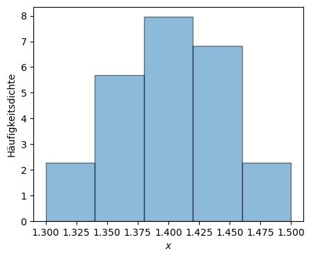
Die Wahrscheinlichkeit, einen Messwert innerhalb eines kleinen Intervalls \(\Delta x\) um den Wert \(\overline x\) zu finden, ist \(dP(X) = h(x)\cdot \Delta x\), wobei \(h(x) = h_i\).
Dichtefunktion#
Je größer die Stichprobe \(m\) (Anzahl der Messungen), desto eher erkennt man die zugrundeliegende Verteilung, der die Messreihe unterliegt. Häufig handelt es sich in der Praxis um eine Normalverteilung (oder auch Gaußverteilung genannt), dessen Dichtefunktion wiefolgt definiert ist:
Auch in unserer Beispiel-Messreihe mit nur wenigen Messwerten kann man schon einen Trend zur Normalverteilung erkennen, wie die folgende Abbildung zeigt.
Show code cell source
from scipy.stats import norm
# MatplotLib Settings:
plt.style.use('default') # Matplotlib Style wählen
plt.figure(figsize=(6,4)) # Plot-Größe
#plt.xkcd()
plt.rcParams['font.size'] = 10; # Schriftgröße
n = len(t_sec)
data=np.array(t_sec)
mean=data.mean()
std=data.std(ddof=1)
bconts, bedges, _p = plt.hist(t_sec, density=True, bins=np.linspace(1.3, 1.5, 6), edgecolor='black', alpha=0.5)
#xmin, xmax = plt.xlim()
xmin = mean-5*std
xmax = mean+5*std
x = np.linspace(xmin, xmax, 100)
p = norm.pdf(x, mean, std)
plt.plot(x, p, linewidth=2, label = 'Normalverteilung', color = "tab:red")
plt.axvline(x=mean, color="tab:red", ls='--', label='Mittelwert')
plt.ylabel('Dichtefunktion $h(x)$')
plt.xlabel('$x$')
plt.legend()
plt.show()
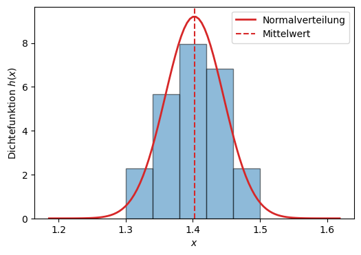
Wichtige Kennzahlen einer Dichtefunktion sind unter anderem der Erwartungswert \(\mu\) und die Varianz \(\sigma^2\).
Der Erwartungswert \(\mu\) wird definiert als das Mittel aller möglichen Werte einer Zufallsvariablen \(X\), gewichtet mit ihrer Wahrscheinlichkeitsdichte \(h(x)\):
Die Varianz \(\sigma^2\) beschreibt die mittlere quadratische Abweichung der Werte von ihrem Erwartungswert:
oder in Integralschreibweise:
Die theoretische Standardabweichung ist die positive Quadratwurzel der Varianz:
Sie gibt an, wie stark die Werte einer Grundgesamtheit typischerweise um den Erwartungswert streuen.
Normalverteilung#
Die Normalverteilung – auch Gaußverteilung genannt – spielt in der Messtechnik und Statistik eine zentrale Rolle. Sie beschreibt viele reale Prozesse in Natur, Wirtschaft und Ingenieurwissenschaften, da diese häufig zufälligen Schwankungen unterliegen. In der Regel kann man davon ausgehen, dass Messungen einer physikalischen Größe normalverteilt sind.
Die Normalverteilung basiert auf dem zentralen Grenzwertsatz, der besagt:
Die Summe vieler unabhängiger Zufallsvariablen – auch mit unterschiedlichen Verteilungen – nähert sich einer Normalverteilung.
Diese Eigenschaft macht die Normalverteilung zu einem fundamentalen Modell der Messtechnik.
Die Dichtefunktion der Normalverteilung lautet:
Die Kennzahlen der Normalverteilung sind der Erwartungswert \(\mu\) und die Standardabweichung \(\sigma\), welche mit den obigen Formeln berechnet werden können:
Das nachfolgende Diagramm zeigt für unterschiedliche Standardabweichungen \(\sigma\) die zugehörigen Dichtefunktionen. Man erkennt deutlich: Je schmaler die Dichtefunktion, desto kleiner ist die zugehörige Standardabweichung. Das Intervall \(\pm \sigma\) entspricht genau dem Abstand zwischen den Wendepunkten der Dichtefunktion (also dem Bereich, in dem etwa 68,3 % aller Werte liegen wie wir später sehen werden).
Show code cell source
import numpy as np
import matplotlib.pyplot as plt
from scipy.stats import norm
# ==== Matplotlib Settings ====
plt.style.use('default')
plt.figure(figsize=(6, 4))
plt.rcParams['font.size'] = 10
# ==== Daten und Statistik ====
data = np.array(t_sec)
mean = data.mean()
std = data.std(ddof=1)
# ==== x-Bereich ====
xmin = mean - 5 * std
xmax = mean + 5 * std
x = np.linspace(xmin, xmax, 400)
# ==== Farben ====
colors = {
'0.5': 'tab:red',
'1': 'tab:blue',
'2': 'tab:green'
}
# ==== Plot: Normalverteilungen ====
for factor, color in zip([0.5, 1, 2], colors.values()):
p = norm.pdf(x, mean, factor * std)
plt.plot(x, p, linewidth=2, color=color)
# ==== Füllung für ±0.5σ ====
p = norm.pdf(x, mean, 0.5*std)
plt.fill_between(x, p, where=(x >= mean - 0.5 * std) & (x <= mean + 0.5 * std),
color='tab:red', alpha=0.35)
# ==== Pfeile vom Mittelwert zu ±σ auf Höhe der Wendepunkte ====
sigmas = {
'0.5': 0.5*std,
'1': std,
'2': 2*std
}
for label, sigma in sigmas.items():
color = colors[label]
y_wendepunkt = norm.pdf(mean + sigma, mean, sigma)
for sign in [-1, 1]:
x_target = mean + sign * sigma
# Horizontaler Pfeil
plt.annotate(
'',
xy=(x_target, y_wendepunkt),
xytext=(mean, y_wendepunkt),
arrowprops=dict(arrowstyle='->', color=color, lw=1.8)
)
# Label deutlich näher zur Mitte (50 %) und etwas höher (+0.06)
x_label = mean + sign * sigma * 0.3
plt.text(
x_label, y_wendepunkt + 0.1,
'σ',
color=color, ha='center', va='bottom', fontsize=9
)
# ==== Mittelwertlinie ====
plt.axvline(x=mean, color='black', ls='-', lw=1)
plt.xticks([mean], [r'$\mu$'])
plt.yticks([])
# ==== Rahmen entfernen ====
ax = plt.gca()
for spine in ax.spines.values():
spine.set_visible(False)
# ==== Achsenpfeile zeichnen ====
x_arrow_end = xmax + 0.1 * std
y_arrow_end = plt.ylim()[1] * 1.1
# X-Achse mit Pfeil
plt.annotate('', xy=(x_arrow_end, 0), xytext=(xmin, 0),
arrowprops=dict(arrowstyle='->', color='black', lw=1.0))
# Y-Achse mit Pfeil
plt.annotate('', xy=(mean, y_arrow_end), xytext=(mean, 0),
arrowprops=dict(arrowstyle='->', color='black', lw=1.0))
# ==== Achsenticks entfernen, nur μ bleibt ====
plt.tick_params(left=False, bottom=False, labelbottom=True)
plt.tight_layout()
plt.show()
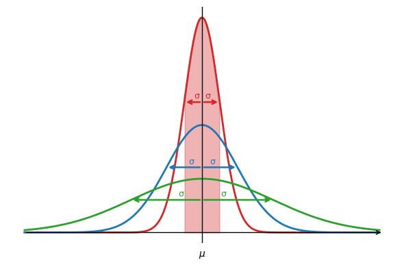
Man erkennt außerdem an den obigen Kennzahlen die enge Verwandtschaft zu den empirischen Kennzahlen der Stichprobe. Die Größen \(\sigma\) (Standardabweichung der Grundgesamtheit) und \(s\) (empirische Standardabweichung der Stichprobe) unterscheiden sich lediglich aufgrund von \(m \rightarrow m-1\)! Je weniger Messwerte \(m\), desto signifikanter ist der Unterschied!
Grund für diesen Unterschied ist, dass man in der Statistik im Falle der Normalverteilung nicht mehr von einer Schätzung spricht, sondern von den exakten Parametern der Verteilung, die den gesamten Datensatz (die Grundgesamtheit) vollständig beschreiben (Allwissenheit, der wahre Wert ist der Erwartungswert).
Während also die empirischen Größen \(\overline{x}\) und \(s\) nur auf einer endlichen Stichprobe beruhen und damit Schätzwerte für \(\mu\) und \(\sigma\) sind, gelten \(\mu\) und \(\sigma\) selbst als wahre Kennzahlen der zugrunde liegenden Grundgesamtheit.
\(s\) oder \(\sigma\)?
Welche Größe, s oder \(\sigma\), als Messunsicherheit für die Einzelmessung \(x\) verwendet wird hängt vom Einzelfall ab. Wichtig ist, dass man dazu schreibt, welcher Wert verwendet wurde, damit die Argumentation nochvollzogen werden kann. Generell sollte \(s\) insbesondere bei wenigen Messwerten verwendet werden, denn mit \(s\) ist auch der etwas seltsame Fall einer Einzelmessung abgedeckt: für m = 1 wäre \(\sigma\) = 0, \(s\) dagegen nicht definiert. Die zweite Aussage ist, bezogen auf die statistische Interpretation, sicher sinnvoller.
Warnung
Im Folgenden benutzen wir häufig \(\sigma\) synonym für empirische und theoretische Standardabweichung. Da später noch die Variable \(s\) als Freiheitsgrad definiert wird sollen hiermit Missverständnisse soweit wie möglich reduziert werden.
Folgender Python-Code berechnet die Unterschiede zwischen theoretischer und empirischer Standardabweichung für unsere Messreihe von oben:
Show code cell source
import math
def arithmetischer_mittelwert(array):
n = len(array)
return sum(array) / n
def arithmetischer_varianz(array):
n = len(array)
mn = sum(array) / n
var = (1 / (n)) * sum(map(lambda xi: (xi-mn) ** 2 , array))
return var
def arithmetischer_standard_abweichung(array):
n = len(array)
mn = sum(array) / n
var = (1 / (n)) * sum(map(lambda xi: (xi-mn) ** 2 , array))
std = math.sqrt(var)
return std
# Berechne arithmetische Statistik
arithm_mittelwert = arithmetischer_mittelwert(t_sec.to_numpy().flatten())
arithm_varianz = arithmetischer_varianz(t_sec.to_numpy().flatten())
arithm_stdabweichung = arithmetischer_standard_abweichung(t_sec.to_numpy().flatten())
# Mittelwert, Varianz und Standardabweichung berechnen
emp_mittelwert = t_sec.mean().values[0]
emp_varianz = t_sec.var().values[0]
emp_stdabweichung = t_sec.std().values[0]
# DataFrame für die Zusammenfassungsstatistiken erstellen
zusammenfassung_data = {
'Statistische Größe': ['Mittelwert (s)', 'Varianz (s^2)', 'Standardabweichung (s)'],
'Arithmetisch': [arithm_mittelwert, arithm_varianz, arithm_stdabweichung],
'Empirisch': [emp_mittelwert, emp_varianz, emp_stdabweichung],
'Differenz (%)': [(arithm_mittelwert-emp_mittelwert)*100, (arithm_varianz-emp_varianz)*100, (arithm_stdabweichung-emp_stdabweichung)*100]
}
zusammenfassung_df = pd.DataFrame(zusammenfassung_data)
# Histogramm-Daten als Tabelle ausgeben
print("\nZusammenfassungsstatistiken:")
print(tabulate(zusammenfassung_df, headers='keys', tablefmt='pretty'))
Zusammenfassungsstatistiken:
+---+------------------------+-----------------------+-----------------------+-----------------------+
| | Statistische Größe | Arithmetisch | Empirisch | Differenz (%) |
+---+------------------------+-----------------------+-----------------------+-----------------------+
| 0 | Mittelwert (s) | 1.4022727272727271 | 1.4022727272727271 | 0.0 |
| 1 | Varianz (s^2) | 0.0017902892561983434 | 0.0018755411255411217 | -0.008525186934277826 |
| 2 | Standardabweichung (s) | 0.042311809890364455 | 0.043307518118002576 | -0.09957082276381216 |
+---+------------------------+-----------------------+-----------------------+-----------------------+
Standardabweichung des Mittelwertes#
Als Messergebnis einer Messreihe benutzen wir den Mittelwert, er ist immerhin unser bester Schätzwert für den wahren oder richtigen Wert. Wie berechnet sich jedoch die Unsicherheit des Mittelwertes? Die oben berechneten Standardabweichungen geben nämlich lediglich die Unsicherheit eines Messwertes \(x_j\) (einer Einzelmessung) an, aber nicht die des Mittelwertes \(\overline x\)!
Dank des sogenannten Grenzwertsatzes können wir dies einfach herleiten.
Zentraler Grenzwertsatz der Wahrscheinlichkeitstheorie
Der Durchschnitt einer großen Anzahl unabhängiger Zufallsvariablen, die aus derselben Verteilung stammen, ist annähernd normalverteilt – unabhängig von der Form der ursprünglichen Verteilungsfunktion.
Der Grenzwertsatz sagt im Prinzip aus, dass wenn man eine ausreichend große Stichprobe aus einer Grundgesamtheit nimmt, so wird der Mittelwert der Stichprobe näherungsweise dem Mittelwert der Grundgesamtheit entsprechen und sich somit dem wahren Wert annähern.
Angenommen, wir nehmen viele (\(k\)) Stichproben (mit jeweils \(j\) Messwerten) auf. Dann haben wir \(k\) Messreihen (oder wir teilen eine super große Messreihe in mehrere kleine auf). Für jede dieser Messreihen berechnen wir den Mittelwert. Dadurch erhalten wir eine neue Messreihe, die aus \(k\) Mittelwerten besteht. Dann sind laut Grenzwertsatz diese \(k\) Mittelwerte wieder normalverteilt und wir können alle Regeln von oben anwenden und die Varianz des Mittelwertes berechnen:
Da alle \(x_j\) unabhängig und gleich verteilt sind, addieren sich die Varianzen, und Konstanten ziehen quadratisch heraus (\(\sigma(\overline x)^2 = \int_{-\infty}^{+\infty} (x - \overline x)^2 \cdot h(x) \, dx\)):
Das heißt aus den \(k\) Mittelwerten könnte wir wieder einen Mittelwert berechnen und folglich auch die Standardabweichung der Mittelwerte:
Warnung
Die Standardabweichung des Mittelwertes \(\sigma(\overline x)\) einer Messreihe ist gegenüber der Abweichung der Einzelmessungen \(\sigma(x)\) um den Faktor \(\sqrt{m}\) reduziert. Der Grund dafür ist, dass sich statistisch ermittelte Unsicherheiten teilweise herausmitteln.
Standardabweichung des Mittelwertes
Für die Standardabweichung des Mittelwertes der obigen Messreihe erhalten wir dadurch
Bei einer großen Anzahl Messungen (>30) liegen etwa 68% der Einzel-Messungen im Intervall \(\pm 1\cdot \sigma(x)\) um den Mittelwert der Messreihe herum. Würden man den wahren Wert kennen, könnte man weiter herausfinden, dass etwa 68% der Mittelwerte im Intervall \(\pm s(\overline x)\) um den wahren Wert lägen. Doch wie kommt man auf diese Wahrscheinlichkeiten? Für einen konkreten Messwert kann keine Wahrscheinlichkeit, sondern immer nur ein Intervall zweier Messwertgrenzen angegeben werden. Zur Berechnung der Wahrscheinlichkeit muss zwischen Grenzen \(x_1\) und \(x_2\) integriert werden:
Dies kann nicht auf eine elementare Stammfunktion zurückgeführt werden, weshalb die normierte Normalverteilung eingeführt wurde.
Show code cell source
# MatplotLib Settings:
plt.style.use('default') # Matplotlib Style wählen
plt.figure(figsize=(6,4)) # Plot-Größe
#plt.xkcd()
plt.rcParams['font.size'] = 10; # Schriftgröße
n = len(t_sec)
data=np.array(t_sec)
mean=data.mean()
std=data.std(ddof=1)
x_volt_2 = np.random.normal(mean, std, n)
x_volt_3 = np.random.normal(mean, std, n)
x_volt_4 = np.random.normal(mean, std, n)
x_volt_5 = np.random.normal(mean, std, n)
x_volt_6 = np.random.normal(mean, std, n)
x_volt_7 = np.random.normal(mean, std, n)
x_volt_8 = np.random.normal(mean, std, n)
x_volt_9 = np.random.normal(mean, std, n)
data_2=np.array(x_volt_2)
data_3=np.array(x_volt_3)
data_4=np.array(x_volt_4)
data_5=np.array(x_volt_5)
data_6=np.array(x_volt_6)
data_7=np.array(x_volt_7)
data_8=np.array(x_volt_8)
data_9=np.array(x_volt_9)
means = [data.mean(), data_2.mean(), data_3.mean(),data_4.mean(),data_5.mean(),data_6.mean(),data_7.mean(),data_8.mean(),data_9.mean(),]
data_means = np.array(means)
#bconts, bedges, _p = plt.hist(x_volt, density=True, bins=np.linspace(0.95, 1.05, 6), label = "Messwerte, Sichprobe 1")
#xmin, xmax = plt.xlim()
xmin = mean-5*std
xmax = mean+5*std
x = np.linspace(xmin, xmax, 100)
p = norm.pdf(x, data.mean(), data.std(ddof=1))
p_2 = norm.pdf(x, data_2.mean(), data_2.std(ddof=1))
p_3 = norm.pdf(x, data_3.mean(), data_3.std(ddof=1))
p_4 = norm.pdf(x, data_4.mean(), data_4.std(ddof=1))
p_5 = norm.pdf(x, data_5.mean(), data_5.std(ddof=1))
p_6 = norm.pdf(x, data_6.mean(), data_6.std(ddof=1))
p_7 = norm.pdf(x, data_7.mean(), data_7.std(ddof=1))
p_8 = norm.pdf(x, data_8.mean(), data_8.std(ddof=1))
p_9 = norm.pdf(x, data_9.mean(), data_9.std(ddof=1))
p_means = norm.pdf(x, data_means.mean(), data_means.std(ddof=1))
plt.plot(x, p, linewidth=2, label = 'Stichprobe 1', color="tab:blue", alpha = 1.0)
plt.plot(x, p_2, linewidth=2, label = 'Stichprobe 2', color="tab:blue", alpha = 0.8)
plt.plot(x, p_2, linewidth=2, label = 'Stichprobe 3', color="tab:blue", alpha = 0.6)
plt.plot(x, p_3, linewidth=2, label = 'Stichprobe 4', color="tab:blue", alpha = 0.4)
plt.plot(x, p_4, linewidth=2, label = 'Stichprobe 5', color="tab:blue", alpha = 0.2)
plt.plot(x, p_5, linewidth=2, label = 'Stichprobe 6', color="tab:green", alpha = 0.4)
plt.plot(x, p_6, linewidth=2, label = 'Stichprobe 7', color="tab:green", alpha = 0.6)
plt.plot(x, p_7, linewidth=2, label = 'Stichprobe 8', color="tab:green", alpha = 0.8)
plt.plot(x, p_8, linewidth=2, label = 'Stichprobe 9', color="tab:green", alpha = 1.0)
plt.plot(x, p_means, linewidth=2, label = 'Mittelwert-Verteilung', color="tab:red", alpha = 1.0)
plt.axvline(x=data_means.mean(), color="tab:red", ls='--', label='wahrer (?) Wert')
plt.ylabel('Häufigkeitsdichte')
plt.xlabel('$x$')
plt.legend(bbox_to_anchor=(1,1), loc="upper left")
plt.show()
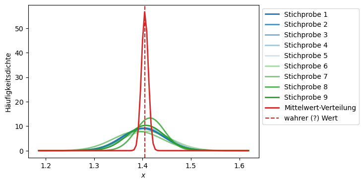
Normierte Normalverteilung#
Zur Berechnung von Wahrscheinlichkeiten in der Normalverteilung wird häufig die sogenannte Standardnormalverteilung oder auch normierte Normalverteilung verwendet.
Diese ist eine Normalverteilung mit dem Erwartungswert \(\mu = 0\) und der Standardabweichung \(\sigma = 1\).
Um eine beliebige Normalverteilung \(X \sim \mathcal{N}(\mu, \sigma)\) in die Standardnormalverteilung zu überführen, wird die Zufallsvariable standardisiert und normiert, d.h. \(z\) besitzt keine Einheit:
Durch diese Normierung erhält man folgende Dichtefunktion für \(\mu = 0\) und \(\sigma = 1\):
{kind=link}
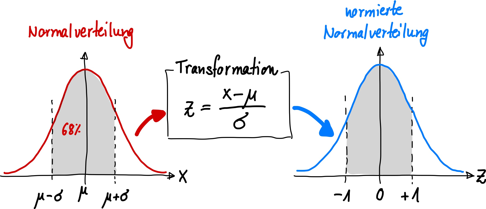
Abb. 18 Transformation der Normalverteilung in eine normierte Normalverteilung.#
Der Flächeninhalt unterhalb dieser Verteilungsfunktion ist wieder auf 100% normiert, wenn von \(\pm \infty\) integriert wird. Die maximale Amplitude ist jetzt \(1/\sqrt{2 \pi}\). Die \(z\)-Achse (vorher Messwerte \(x\)) ist jetzt dimensionslos (einheitenlos). Somit können mit normierten Gaußverteilungen verschiedene physikalische Größen auch von verschiedenen Messgeräten bezüglich ihrer Streuung verglichen werden.
Wahrscheinlichkeiten für beliebige Werte \(z\) (bzw. \(x\)) in den Grenzen \(z_1\) und \(z_2\) (bzw. \(x_1\) und \(x_2\)) lassen sich aus Tabellen für die Standardnormalverteilung abgelesen werden.
Tabelle der normierten Wahrscheinlichkeiten in Abhängigkeit von \(z\)
Die Spalten geben die erste Nachkommastelle von \(z\) an, die Zeilen die zweite.
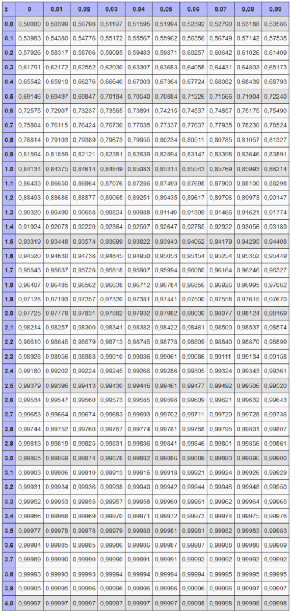
Diese Tabellen enthalten die Fläche unter der Dichtefunktion links von einem gegebenen \(z\)-Wert, also die kumulative Wahrscheinlichkeit \(\Phi(z)\)
Da die Standardnormalverteilung symmetrisch zur y-Achse verläuft, gilt allgemein:
Diese Eigenschaft wird ausgenutzt, um negative z-Werte, die nicht aus der Tabelle abzulesen sind, abzubilden. Ein negativer z-Wert bedeutet, dass der Punkt links vom Mittelwert liegt.
Wahrscheinlichkeit größer als ein Wert:
\[ P(X > x_0) = 1 - P(Z \le z_0) = 1 - \Phi(z_0) \]Wahrscheinlichkeit kleiner als ein Wert:
\[ P(X \le x_0) = P(Z \le z_0) = \Phi(z_0) \]Wahrscheinlichkeit zwischen zwei Werten:
\[ P(x_1 \le X \le x_2) = P(z_1 \le Z \le z_2) = \Phi(z_2) - \Phi(z_1) \]
Es gilt beispielsweise:
Für \(z = 0\): \(P(Z \le 0) = \Phi(z = 0{,}50) = 0{,}5 = 50\%\),
Für \(z = 1\): \(P(Z \le 1) = \Phi(z = 1{,}00) = 0{,}8413 = 84{,}13\%\),
Für \(z = -1\): \(P(Z \le -1) = \Phi(z = -1{,}00) = 1 - \Phi(z = 1{,}00) = 1 - 0{,}8413 = 0{,}1587 = 15{,}87\%\),
Für \(z = 1{,}64\): \(P(Z \le -1{,}64) = 1 - P(Z \le 1{,}64) = 1 - 0{,}9495 = 0{,}0505\) = 5{,}05%.
Zur Veranschaulichung kann die Berechnung der Flächen unter der Normalverteilung auch in Python erfolgen.
Das folgende Beispiel zeigt, wie man verschiedene Wahrscheinlichkeiten berechnet und die entsprechenden Bereiche grafisch darstellt.
Show code cell source
import numpy as np
import matplotlib.pyplot as plt
from scipy.stats import norm
# === Parameter der Standardnormalverteilung ===
mu = 0
sigma = 1
# === Wertebereich und Dichtefunktion ===
z = np.linspace(-4, 4, 1000)
y = norm.pdf(z, mu, sigma)
# === Markierte z-Werte ===
z_values = [-1, 0, 2]
Phi_z = [norm.cdf(zv) for zv in z_values]
P_greater_2 = 1 - norm.cdf(2) # Wahrscheinlichkeit für Z > 2
# === Plot ===
plt.figure(figsize=(9, 5))
plt.plot(z, y, 'k-', lw=2, label='Dichtefunktion $h(z)$')
# === Flächen einfärben ===
plt.fill_between(z, y, where=(z <= -1), color='tab:red', alpha=0.4, label=r'$P(Z < -1)$')
plt.fill_between(z, y, where=(z <= 0), color='tab:gray', alpha=0.3, label=r'$P(Z < 0)$')
plt.fill_between(z, y, where=(z >= 2), color='tab:blue', alpha=0.35, label=r'$P(Z > 2)$')
# === Achsenlinien ===
plt.axvline(0, color='k', linestyle='--', lw=1)
plt.axhline(0, color='black', lw=0.8)
plt.xlabel('$z$')
plt.ylabel('$h(z)$')
plt.title('Beispiele für Werte der Verteilungsfunktion Φ(z)')
plt.grid(alpha=0.3)
# === Annotationen mit Wahrscheinlichkeiten ===
# z = -1
plt.annotate(r'$z=-1$', xy=(-1, 0.24), xytext=(-1.5, 0.3),
arrowprops=dict(arrowstyle='->', color='tab:red'),
color='tab:red', fontsize=11)
plt.text(-4.3, 0.06,
r'$P(Z < -1) = \Phi(-1) = 1-\Phi(1) = 0{,}1587$', color='tab:red', fontsize=10)
# z = 0
plt.annotate(r'$z=0$', xy=(0, 0.4), xytext=(0.3, 0.45),
arrowprops=dict(arrowstyle='->', color='tab:gray'),
color='tab:gray', fontsize=11)
plt.text(-0.8, 0.22,
r'$P(Z < 0) = \Phi(0) = 0{,}5$', color='tab:gray', fontsize=10)
# z > 2
plt.annotate(r'$z=2$', xy=(2, 0.05), xytext=(2.2, 0.12),
arrowprops=dict(arrowstyle='->', color='tab:blue'),
color='tab:blue', fontsize=11)
plt.text(0.1, 0.015,
r'$P(Z > 2) = 1 - \Phi(2) = 0{,}0228$', color='tab:blue', fontsize=10)
# === Legende und Anzeige ===
plt.legend(loc='upper left')
plt.tight_layout()
plt.show()
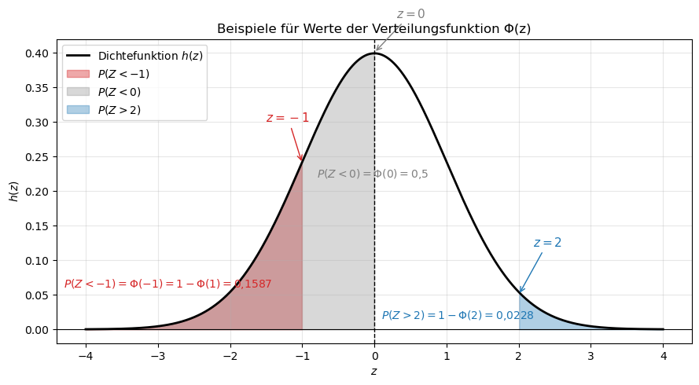
Aufgabe: Wahrscheinlichkeit im Intervall \(P(x_1 < x < x_2)\) berechnen
Es soll im Folgenden ein Messsystem einer Abfüllanlage überprüft werden.
Die Flaschen sind jeweils mit 0,7 l Saftgetränk befüllt.
Aus Kalibrierungen ist bekannt, dass die Messwerte des Messsystems der Abfüllanlage normalverteilt sind mit einem
Erwartungswert \(\mu = 0{,}7\,\mathrm{l}\) und einer Standardabweichung \(\sigma = 5\,\mathrm{ml} = 0{,}005\,\mathrm{l}\).
Wie groß ist die Wahrscheinlichkeit, dass die Saftflaschen mit einem Inhalt zwischen 0,69 l und 0,71 l befüllt werden?
Lösung: Wahrscheinlichkeit im Intervall \(P(x_1 < x < x_2)\) berechnen
Standardisierung der Grenzen mit der z-Transformation:
\[ z_\mathrm{u} = \frac{x_1 - \mu}{\sigma} = \frac{0{,}69 - 0{,}7}{0{,}005} = -2 \]\[ z_\mathrm{o} = \frac{x_2 - \mu}{\sigma} = \frac{0{,}71 - 0{,}7}{0{,}005} = 2 \]Ablesen aus der z-Tabelle:
\[ \Phi(2{,}00) = 0{,}97725 \](Wahrscheinlichkeit, dass der Messwert zwischen 0 l und 0,71 l liegt)
\[ \Phi(-2{,}00) = 1 - \Phi(2{,}00) = 1 - 0{,}97725 = 0{,}02275 \](Wahrscheinlichkeit, dass der Messwert kleiner als 0,69 l ist)
Berechnung der gesuchten Wahrscheinlichkeit:
\[ P(0{,}69 \le X \le 0{,}71) = \Phi(2) - \Phi(-2) = 0{,}97725 - 0{,}02275 = 0{,}9545 \]Mit einer Wahrscheinlichkeit von 95,45 % werden die Flaschen in der Abfüllanlage mit einem Inhalt zwischen 0,69 l und 0,71 l befüllt.
Dies entspricht genau der \(2\sigma\)-Umgebung einer Normalverteilung (siehe vorheriges Kapitel) – was für \(z = \pm 2\) auch zu erwarten ist.
Show code cell content
import numpy as np
import matplotlib.pyplot as plt
from scipy.stats import norm
# === Definition der beiden Normalverteilungen ===
# z-Verteilung (Standardnormalverteilung)
mu_z, sigma_z = 0, 1
# x-Verteilung (Abfüllanlage, in Litern)
mu_x, sigma_x = 0.7, 0.005
# === Bereiche für die x-Achsen ===
z = np.linspace(-4, 4, 1000)
x = np.linspace(0.68, 0.72, 1000)
# === Dichtefunktionen ===
y_z = norm.pdf(z, mu_z, sigma_z)
y_x = norm.pdf(x, mu_x, sigma_x)
# === Grenzen und Wahrscheinlichkeiten ===
# Für Z-Verteilung
z1, z2 = -1, 1.5
z3, z4 = -1.5, 1.8
Pz_between = norm.cdf(z2) - norm.cdf(z1)
Pz_less = norm.cdf(z3)
Pz_greater = 1 - norm.cdf(z4)
# Für X-Verteilung
x1, x2 = 0.69, 0.71
Px_between = norm.cdf(x2, mu_x, sigma_x) - norm.cdf(x1, mu_x, sigma_x)
Px_less = norm.cdf(x1, mu_x, sigma_x)
Px_greater = 1 - norm.cdf(x2, mu_x, sigma_x)
# === Plot Setup ===
fig, axes = plt.subplots(1, 2, figsize=(12, 5))
ax1, ax2 = axes
# ------------------------------------------
# (1) Standardnormalverteilung (z)
# ------------------------------------------
ax1.plot(z, y_z, 'k-', lw=2, label='Dichtefunktion $h(z)$')
ax1.fill_between(z, y_z, where=(z >= z1) & (z <= z2),
color='tab:blue', alpha=0.4,
label=fr'$P({z1}<Z<{z2})={Pz_between:.3f}$')
ax1.fill_between(z, y_z, where=(z <= z3),
color='tab:red', alpha=0.4,
label=fr'$P(Z<{z3})={Pz_less:.3f}$')
ax1.fill_between(z, y_z, where=(z >= z4),
color='tab:green', alpha=0.4,
label=fr'$P(Z>{z4})={Pz_greater:.3f}$')
ax1.axvline(mu_z, color='k', linestyle='--', lw=1)
ax1.set_xlabel('$z$')
ax1.set_ylabel('$h(z)$')
ax1.set_title('Standardnormalverteilung')
ax1.legend(loc='upper left')
ax1.grid(alpha=0.3)
# ------------------------------------------
# (2) Abfüllanlage-Normalverteilung (x)
# ------------------------------------------
ax2.plot(x, y_x, 'k-', lw=2, label='Dichtefunktion $h(x)$')
ax2.fill_between(x, y_x, where=(x >= x1) & (x <= x2),
color='tab:blue', alpha=0.4,
label=fr'$P({x1}<X<{x2})={Px_between:.3f}$')
ax2.fill_between(x, y_x, where=(x <= x1),
color='tab:red', alpha=0.4,
label=fr'$P(X<{x1})={Px_less:.3f}$')
ax2.fill_between(x, y_x, where=(x >= x2),
color='tab:green', alpha=0.4,
label=fr'$P(X>{x2})={Px_greater:.3f}$')
ax2.axvline(mu_x, color='k', linestyle='--', lw=1)
ax2.set_xlabel('$x$ [l]')
ax2.set_ylabel('$h(x)$')
ax2.set_title('Normalverteilung der Abfüllanlage')
ax2.legend(loc='upper left')
ax2.grid(alpha=0.3)
# Layout und Anzeige
plt.tight_layout()
plt.show()
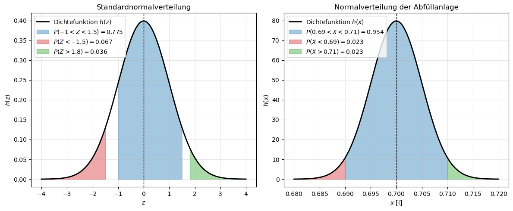
Vertrauensintervalle#
Mit \(x_1 = \mu - t\cdot \sigma\) und \(x_2 = \mu + t\cdot \sigma\) können nun sogenannten Vertrauensintervalle oder Vertrausnbereiche berechnet werden. Hierfür berechnet man \(P(\mu-t\cdot\sigma \leq x \leq \mu+t\cdot\sigma)\), also die Wahrscheinlichkeit, mit welcher ein Messwert innerhalb einer \(t\cdot\sigma\)-Umgebung um den Mittelwert liegt.
68% der Messwerte liegen beispielsweise innerhalb des Intervalls \(\pm \sigma(x)\) (also \(t=1\)).
Weitere Sigma-Umbegbungen, die man kennen sollte:
Bei einer echten Normalverteilung gilt folgendes:
68,3% aller Messwerte liegen im Bereich \(\pm \sigma\)
95,5% aller Messwerte liegen im Bereich \(\pm 2\sigma\)
99,7% aller Messwerte liegen im Bereich \(\pm 3\sigma\)
Im Abstand \(\pm \sigma\) sind die Wendestellen
Die Normalverteilung reicht von \(-\infty\) bis \(+\infty\)
Güteklassen von Messgeräten#
Durch die Intervallgrenzen des Vertrauensbereichs werden Güteklassen von Messeinrichtungen definiert. Andersherum können auch Anforderungen an Messgeräte gestellt werden: Die Anforderungen werden umso höher, je höher die Wahrscheinlichkeit sein soll, dass sich die Messwerte dem richtigen Wert annähern. Der Messtechniker kann somit mit der gegebenen Wahrscheinlichkeit abschätzen, ob ermittelte Messwerte innerhalb einer durch Fertigungsunterlagen zugelassenen Toleranz für die Maße eines Werkstücks liegen. Übliche Werte für Invervallgrenzen (meist symmetrisch, also Abweichungen sowohl nach unten als auch nach oben im gleichen Maße).
Intervallgrenzen |
Transformation |
\(P(x) = \Phi(z)\) |
Bezeichnung |
Wahrscheinlichkeit |
|---|---|---|---|---|
\(\mu \pm 1 \cdot \sigma\) |
1 |
0,6827 |
Orientierende Messung |
68,27% |
\(\mu \pm 1{,}96 \cdot \sigma\) |
1,96 |
0,95 |
Betriebsmessung |
95% |
\(\mu \pm 2 \cdot \sigma\) |
2 |
0,9545 |
Betriebsmessung |
95,45% |
\(\mu \pm 2{,}58 \cdot \sigma\) |
2,58 |
0,99 |
Präzisionsmessung |
99% |
\(\mu \pm 3 \cdot \sigma\) |
3 |
0,9973 |
Präzisionsmessung |
99,73% |
\(\mu \pm 4 \cdot \sigma\) |
4 |
0,9999 |
Präzisionsmessung |
99,99% |
Angabe der Messunsicherheit#
Bei der Berechnung der Messunsicherheit nach GUM vom Typ A kann fast immer eine Normalverteilung angenommen (ist aber nicht zwingend notwendig). Als Messergebnis einer Messreihe dient der beste Schätzwert, also wie oben bereits erwähnt der empirisch ermittelte Mittelwert \(\overline x\). Die empirische ermittelte Standardabweichung des Mittelwertes
(oder Standardunsicherheit \(\sigma\)) muss bei der Berechnung der Messunsicherheit für den Mittelwert \(\overline x\) benutzt werden. Die Standardabweichung wird als sogenannte Halbbreite \(a\) in die Messunsicherheitsbewertung eingeführt. Außerdem muss der sogenannte Gewichtsfaktor \(G\) (welcher später im Messunsicherheitsbudget noch mal wichtig wird) berücksichtigt werden. Dieser hängt von der Verteilungsfunktion ab und ist für die Normalverteilung \(G=1\). Für andere Verteilungen ergeben sich andere Gewichtsfaktoren.
Für Messergebnis \(\overline x\) ist die Messunsicherheit folglich:
in einem Vertrauensbereich von 68%. Wählt man statt der \(1\cdot \sigma\)-Umgebung die in der Messtechnik übliche \(1\cdot \sigma\)-Umgebung, so lautet die erweiterte Messunsicherheit für einen Vertrauensbereich von 95,45%:
Allgmein gilt:
wobei \(t\) der Erweiterungsfaktor ist.
Student-t (kleine Stichproben)#
Ist die Zahl der Messwerte nur klein (\(m \leq 25\)) werden die aus der Normalverteilung berechneten Parameter ziemlich unsicher. Anfang des 20. Jh. veröffentlichte WILLIAM SEALY GOSSET unter dem Pseudonym „Student“ eine Verteilungsfunktion, die eine zuverlässigere Parameterschätzung auch für kleine Stichprobengrößen erlaubt. Die Student-Verteilung (oder t-Verteilung) hängt unter anderem von der Anzahl der Frieheitsgrade \(s = m-1\) ab. Für große Stichproben, also \(m \rightarrow \infty\) geht sie in die uns bereits bekannte Normalverteilung über. Die Dichtefunktion der Student-Verteilung sieht recht kompliziert aus:
mit
\(x\) als Zufallsvariable
\(s = m - 1\): Freiheitsgrade, also die Anzahl unabhängiger Messwerte \(m\) minus 1
\(\Gamma(\cdot)\): Gammafunktion, eine Verallgemeinerung der Fakultät:
In der folgenden Abbildung ist für eine Auswahl an Freiheitsgrade \(n = 1, 2, 10\) und \(20\) die Kurvenverläufe im Vergleich zur Normalverteilung dargestellt:
Show code cell source
import numpy as np
import matplotlib.pyplot as plt
from scipy.stats import t, norm
# === Wertebereich ===
x = np.linspace(-4, 4, 500)
# === Normalverteilung (Referenz) ===
y_norm = norm.pdf(x, 0, 1)
# === Student-t Verteilungen für verschiedene Freiheitsgrade (n-1) ===
dfs = [1, 2, 10, 20] # Freiheitsgrade = n - 1
colors = ['tab:red', 'tab:orange', 'tab:blue', 'tab:green']
# === Plot ===
plt.figure(figsize=(7, 5))
plt.plot(x, y_norm, 'k--', lw=2, label='Normalverteilung')
for df, c in zip(dfs, colors):
y_t = t.pdf(x, df)
plt.plot(x, y_t, lw=2, color=c, label=fr'Student-t ($s={df+1}$)')
# === Achsen und Gestaltung ===
plt.xlabel('$x$')
plt.ylabel('Dichte $h(x)$')
plt.title('Vergleich: Student-t-Verteilungen für verschiedene Stichprobengrößen')
plt.grid(alpha=0.3)
plt.legend(title='Verteilungen')
plt.tight_layout()
plt.show()
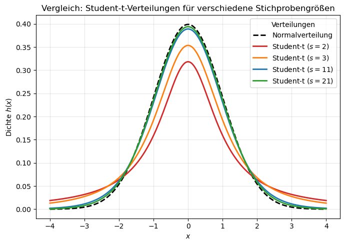
Die Abweichung zwischen Student-Verteilung und der Normalverteilung wird durch den Faktor \(t\) beschrieben. In der nachfolgenden Tabelle sind die Faktoren \(t_{s,p}\) in Abhängigkeit der \(s-p\)-Quantile dargestellt. Das \(s\) Quantil gibt die Anzahl der Freiheitsgerade an, also wie bisher \(s = m-1\). Das \(p\)-Quantil ist ein Maß für die Überdeckungswahrscheinlichkeit, wobei häufig der einseitige Vertrauensbereich \(p = 1-\alpha/2\) angegeben wird (Mit \(P = 1-\alpha\) wird der zweiseitige Vertrauensbereich definiert). \(\alpha\) ist das Signifikanzniveau (Irrtumswahrscheinlichkeit) und \(p\) und \(P\) können darüber ineinander umgerechnet werden.
Tabelle der \(s-p\)-Quantile
Der Student-Faktor \(t_{s,p}\) aus der Tabelle kann als Erweiterungs-Faktor betrachtet werden, mit dem die empirische Standardabweichung \(s\) zu multiplizieren ist, um die gleiche Überdeckungswahrscheinlichkeit wie für eine Normalverteilung zu erhalten:
Angenommen uns liegt eine kleine Stichprobe mit nur \(m = 12\) Messwerten vor und wir möchten für einen Vertrauensbereich von 99% die Messunsicherheit berechnen, so genügt es nicht die Messunsicherheit \(u(\overline x)\) mit dem Erweiterungsfaktor \(t = 3\) der Normalverteilung zu erweitern, da die Wahrscheinlichkeit für diese kleine Stichprobe korrigiert werden muss. Das Signifikanznievau ist in diesem Fall
Und das \(p\)-Quantil ist entsprechend:
Für eine Stichprobe mit \(m = 12\) lesen wir also folgenden Student-Faktor aus der Tabelle ab:
Die erweitere Messunsicherheit berechnet sich folglich:
In Anbetracht der sehr kleinen Stichprobe von lediglich \(m=22\) Messwerten sollte jedoch die Student-t Verteilung hinzugezogen werden und der Vertrauensbereich für 95% korrigiert werden. Es gilt also:
\(P = 1-\alpha = 0{,}95\). Daraus folgt:
\(\Rightarrow \alpha = 1-P = 1-0{,}95 = 0{,}05\)
\(\Rightarrow \alpha/2 = 0{,}025\)
\(\Rightarrow p = 1-\alpha/2 = 1-0{,}025 = 0{,}975\)
Für die Berechnung des s-Quantils gilt:
\(s = m-1 = 22-1 = 21\)
Der \(t\)-Wert des korrigierten Vertrauensbereichs wird aus der Tabelle abgelesen:
Der Unterschied zum Vertrauensbereich, der aus der Normalverteilung hervorgeht, ist ein über 4% höherer Fehler.
### Umrechnung von Vertrauensintervallen
Vertrauensbereiche unterschiedlicher Wahrscheinlichkeiten können ineinander umgerechnet werden:
$$\frac{u_{\alpha 1}}{t_{m-1; 1-\frac{\alpha_1}{2}}} = \frac{u_{\alpha 2}}{t_{m-1; 1-\frac{\alpha_2}{2}}}$$
Hierbei ist $\alpha$ das zweiseitige Signifikanzniveau, also die Irrtumswahrscheinlichkeit $\alpha = 1-P$, wobei $P$ die Wahrscheinlichkeit bzw. die geforderte statistische Sicherheit ist. Der halbseitige (einseitige) Vertrauensbereich wird in manchen Tabellen gewählt und lautet $p = 1-\alpha/2$.
:::{admonition} Beispiel zur Umrechnung von Vertrauensbereichen
:class: tip, dropdown
Die Umrechnung des Vertrauensbereich 95% aus dem letzten Beispiel sollen in einen Vertrauensbereich mit einem anderen Vertrauensniveau, von 99% erfolgen. Die Ergebnisse für 95% sind bekannt. Nun muss das Quantil für 99% (also $\alpha = $1%) bestimmt werden. Analog werden die $s = m-1 = 21$ und $p = 1-\alpha/2 = 1-0{,}005 = 0{,}995$ Quantile bestimmt und der $t$-Wert aus der Tabelle abgelesen:
$$t_{s;p} = t_{m-1; 1-\alpha/2} = t_{21; 0,995} = 2{,}831$$
Hieraus kann nun nach obiger Gleichung der Vertrauensbereich für 99% berechnet werden:
$$\frac{u_{\alpha 1}}{t_{m-1; 1-\frac{\alpha_1}{2}}} = \frac{u_{\alpha 2}}{t_{m-1; 1-\frac{\alpha_2}{2}}}$$
$$\Rightarrow u_{\alpha 2} = u_{\alpha 1} \cdot \frac{t_{m-1; 1-\frac{\alpha_2}{2}}}{t_{m-1; 1-\frac{\alpha_1}{2}}} = 0{,}0187\,\mathrm s \cdot 2{,}831 / 2{,}080 = 0{,}025\,\mathrm s$$
Die Angabe des Messergebnisses lautet somit:
$$x = (1{,}402 \pm 0{,}025)\,\mathrm s \quad (99\%)$$
Gleichverteilung (Rechteck)#
In den meisten Fällen können Sie eine Normalverteilung der Messwerte annehmen. Bei der Rechteck- oder auch Gleichverteilung geht man davon aus, dass in einem Intervall \(\pm a\) (mit der Halbwertsbreite \(a\)) die Dichtefunktion eine Konstante ist (manchmal werden auch unsymmetrische Ober- und Untergrenze \(a_+\) und \(a_-\) als Intervallgrenzen angegeben). Alle Werte innerhalb der Grenzen sind jetzt gleich wahrscheinlich, und folgen einer rechteckförmigen Wahrscheinlichkeitsdichte (Gleichverteilung). Außerhalb dieser Grenzen verschwindet die Dichtefunktion und ist Null:
Erwartungswert \(\mu\) und Varianz \(\sigma^2\) lassen sich für beliebige Dichtefunktionen wie oben definiert berechnen:
Wobei im letzten Schritt für die Varianz \(\sigma^2\) angenommen wurde, dass \(a_- = -a\) und \(a_+ = +a\) gilt.
Aus der Varianz ergibt sich die Standardunsicherheit \(\sigma\):
Die Fläche unter der kompletten Dichtefunktion ist wieder 1. Abb. 19 zeigt die Rechteck-Verteilung. Die Rechteck-Verteilung wird bei der Berechnung von Messunsicherheiten nach GUM verwendet, wenn Einflussgrößen des Typs B vorliegen und keine näheren Informationen vorliegen. In Datenblättern von Messinstrumenten werden häufig nur Ober- und Untergrenzen definiert, innerhalb welcher sich ein zu messender Wert aufhalten wird. Aus dieser Angabe kann nach dem obigen Verfahren die Messunsicherheit bestimmt werden. Genauso wird auch bei Digitalanzeigen eine Rechteck-Verteilung angenommen. Allgemein gilt: Wenn keine weiteren Informationen zu der Verteilung existieren, wird eine Rechteckverteilung angenommen.
{kind=link}
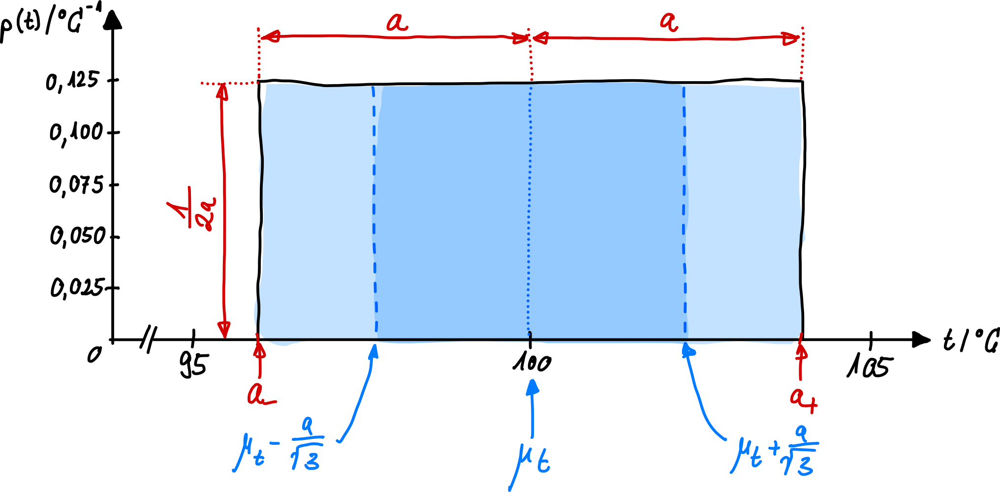
Abb. 19 Gleichverteilung / Rechteckverteilung von Messwerten wird angenommen, wenn nur Ober- und Untergrenzen bekannt sind.#
Dreieckverteilung#
Bei der (symmetrischen) Dreickverteilung häufen sich die Messwerte um den Mittelwert herum. Solche Dreicks-verteilten Zuvallsvariablen erhält man beispielsweise wenn man zwei identische, unabhängige, statig gleichverteilte Zufallsvariablen addiert. Genauso ist der Betrag der Differenz zwei solcher Zufallsvariablen dreieck-verteilt. Bildet man die Differenz so werden systematische Einflüsse des Messinstrumentes, welche die beiden Messungen in gleicher Weise beeinflussen, teilweise kompensiert, was eine Reduktion der Messunsicherheit zur Folge hat.
Die Dichtefunktion lautet:
und ist in Abb. 20 dargestellt.
{kind=link}
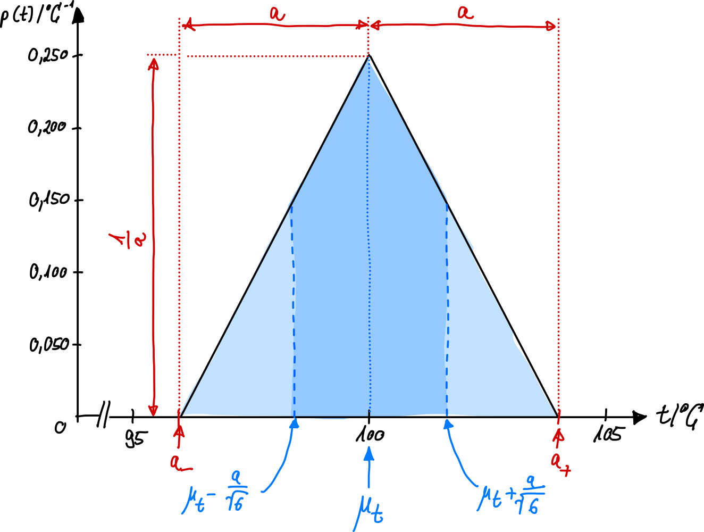
Abb. 20 Eine Dreiecksverteilung wird angenommen, um eine zu berücksichtigen, dass Messwerte nahe der Ober- und Untergrenze unwahrscheinlicher sind.#
Analog zu den obigen Berechnungen können wieder Erwartungswert, Varianz und daraus die Standardunsicherheit berechnet werden:
Auch die Dreieck-Verteilung wird bei GUM für Typ B Einflussgrößen verwendet. Der Gewichtsfakor beträgt
und muss später entsprechend im Messunsicherheitsbudget berücksichtigt werden, wenn verschiedene Messunsicherheiten zu einer kombiniert werden.
Neben den hier dargestellten Verteilungen gibt es natürlich noch diverse andere Verteilungen (Trapez, U, Poisson, …) die in dieser Vorlesung erst mal nicht weiter von Interesse sind. Mit den hier dargestellten Methoden und Konzepten von GUM sollte es jedoch möglich sein, für jede Verteilung eine Messunsicherheit herleiten zu können.
Zweidimensionale (Bivariate) Zufallsvariablen#
Bisher haben wir eindimensionale Zufallsvariablen und ihre zugehörigen Verteilungen betrachtet. Diese Konzepte lassen sich auf beliebig viele Zufallsvariablen erweitern. Die einfachste Erweiterung ist die zweidimensionale, normalverteilte Wahrscheinlichkeitsdichte:
Hierbei sind:
\(\mu_1, \mu_2\) die Erwartungswerte der Zufallsvariablen \(X\) und \(Y\),
\(\sigma_1, \sigma_2\) deren Standardabweichungen,
\(\rho\) der Korrelationskoeffizient zwischen \(X\) und \(Y\).
Im folgenden Python-Code ist die zweidimensionale Normalverteilung dargestellt, inklusive der Projektionen auf die \(xz\)- und \(yz\)-Ebenen.
Show code cell source
import numpy as np
import matplotlib.pyplot as plt
from scipy.stats import multivariate_normal
# === Parameter ===
mu = np.array([0, 0]) # Mittelwerte μ1, μ2
sigma1, sigma2 = 1.0, 0.5 # Standardabweichungen σ1, σ2
rho = 0.0 # Korrelationskoeffizient (0 = unkorreliert)
# === Kovarianzmatrix ===
cov = [[sigma1**2, rho*sigma1*sigma2],
[rho*sigma1*sigma2, sigma2**2]]
# === Gittererzeugung ===
x = np.linspace(-3, 3, 100)
y = np.linspace(-3, 3, 100)
X, Y = np.meshgrid(x, y)
pos = np.dstack((X, Y))
# === Dichtefunktion ===
rv = multivariate_normal(mu, cov)
Z = rv.pdf(pos)
# === Plot ===
fig = plt.figure(figsize=(11, 6))
ax = fig.add_subplot(111, projection='3d')
# Dichtefläche
ax.plot_surface(X, Y, Z, cmap='viridis', alpha=0.9, linewidth=0)
# Projektionen auf XZ- und YZ-Ebene
ax.contour(X, Y, Z, zdir='z', offset=0, cmap='viridis', alpha=0.8)
ax.contour(X, Y, Z, zdir='x', offset=-3, cmap='viridis', alpha=0.5)
ax.contour(X, Y, Z, zdir='y', offset=3, cmap='viridis', alpha=0.5)
# Achsenbeschriftung
ax.set_xlabel('$x$')
ax.set_ylabel('$y$')
ax.set_zlabel('$h(x,y)$')
ax.set_title('Zweidimensionale Normalverteilung')
# Achsengrenzen
ax.set_xlim(-3, 3)
ax.set_ylim(-3, 3)
ax.set_zlim(0, np.max(Z))
# === Ansicht / Perspektive ===
#ax.view_init(elev=30, azim=40)
fig.tight_layout()
plt.show()
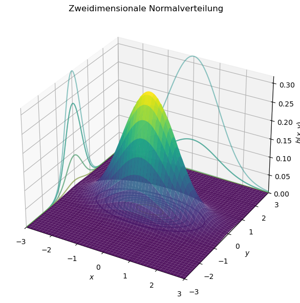
Die Fläche unter der eindimensionalen Dichte war 1, bei der zweidimensionalen Verteilung ist nun das Volumen unter der Dichtefunktion gleich 1:
Die Wahrscheinlichkeit, dass \(X\) und \(Y\) in einem bestimmten Intervall liegen, ergibt sich somit als Doppelintegral über diesen Bereich.
Die Linien gleicher Wahrscheinlichkeit (sogenannte Isolinien) haben die Form von Ellipsen mit dem Mittelpunkt bei (\(\mu_1, \mu_2\)). Sind \(\sigma_1 = \sigma_2\) und \(\rho = 0\), so sind die Ellipsen kreisförmig. Vertikalschnitte von \(h(x, y)\) besitzen die Form einer eindimensionalen Glockenkurve (also einer Normalverteilung).
Für vollständig unkorrelierte Beobachtungen (\(\rho = 0\)) und gleiche Varianzen (\(\sigma_1 = \sigma_2 = \sigma\)) gilt:
Diese Verteilung ist rotationssymmetrisch, d. h. die Isolinien sind Kreise um den Ursprung \((0, 0)\).
Wie bereits oben erwähnt, kann ein Ergebnis auch von mehreren Größen gleichzeitig beeinflusst werden, dann spricht man von mehrdimensionalen (multivariaten) Zufallsvariablen.
Für mehrdimensionale Zufallsvariablen gibt es die Kovarianz. Sie ist eine Maßzahl für den Zusammenhang zwischen zwei Variablen \(x\) und \(y\) und kennen wir bereits für zwei-dimensionale Systeme aus der Kurvenanpassung:
bzw.
wobei \(\overline x\) und \(\overline y\) die jeweiligen Mittelwerte sind. Die Kovarianz ist positiv, wenn \(x\) und \(y\) tendenziell einen gleichgerichteten linearen Zusammenhang aufweisen. Sie ist negativ, wenn ein entgegerichteter linearer Zusammenhang zwischen den beiden Größen existiert. Ist die Kovarianz Null, so besteht kein linearer Zusammenhang, es kann aber ein nicht-linearer Zusammenhang existieren (z.B. u-förmig, also quadratisch). Häufig wird die Kovarianz in Matrix Form angegeben:
oder für vollständig unkorrelierte Zuvallsvariablen:
Kovarianzen hängen von den Einheiten ab. Um Zusammenhänge vergleichbar zu machen, muss die Kovarianz normiert werden, was den Korrelationskoeffizienten liefert, den wir ebenfalls bereits kennen:
Der Korrelationskoeffizient kann nur Werte zwischen -1 und +1 annehmen.